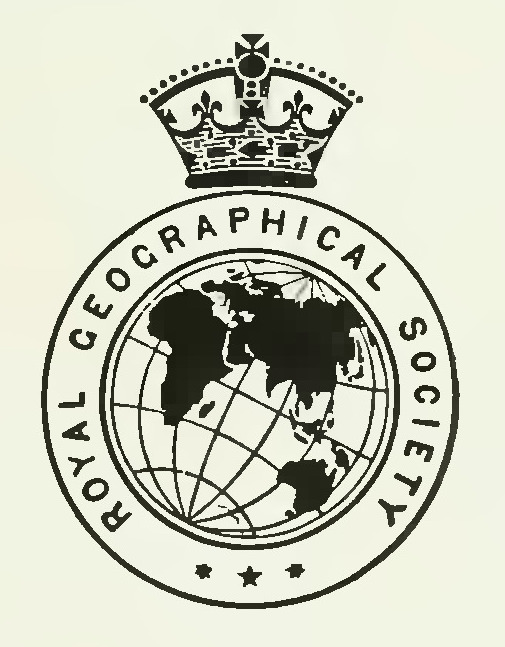
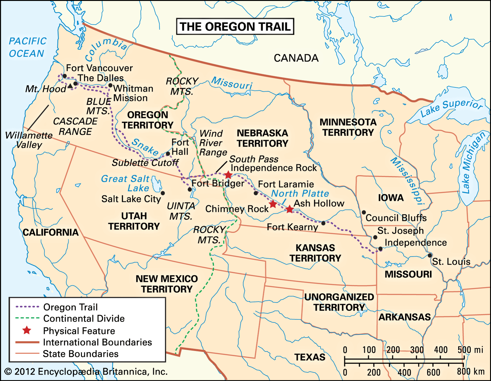

Royal Geographic Society - A Pacific Northwest History

Early Settlements ▾
Fort William
Fort Ross
Astoria
Nootka Sound
Media ▾
Taboo (2017)
Frontier (2016)
PBS: Lewis & Clark (1997)
University of Washington: PNW Exploration
Books
About
Contacts
Exploration of the Pacific Northwest
European Arrival (1513 - 1750)
Settlements & Conflicts (1750 - 1846)
Almost Heroes (1998)
